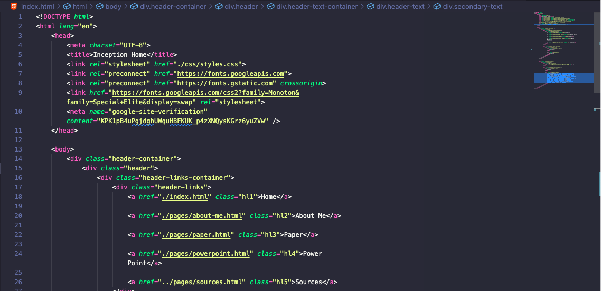

My name is Gerardo Garcia, but I go by Andy. I am 24 years old and this is my 2nd semester at Com. Before Com i attended another school. I spent 5 years there, changed my major from biology to general business, then to finance, and still didn't graduate. I took about a year long break and became a student at com where i changed my major again to computer science. It's pretty fun so far and i think ill be sticking with it.
About Me
Interests & Hobbies
I'm a pretty active person. I like to go on walks with my dog. I also love to play soccer. I have been playing since i was 4. I played 4 years at my other school, and now i play on the weekends if i have time. When i'm not doing something active, i love to relax and either play video games, watch anime or read manga, or just watch tv or a movie.

Spring Semester & Future Goals
This semester was probably my most difficult. I am taking 4 classes which are Calculus 1, Biology 2, Computer Fundamentals 2, and Philosophy. Calculus and Biology have been giving me a hard time, but hopefully i can pass the class by the end of the semester. Biology is pretty interesting, but it is a lot of memorization and its hard to make time to study. Computer Fundamentals is a pretty fun and interesting course. In the future i hope to be a web developer.
